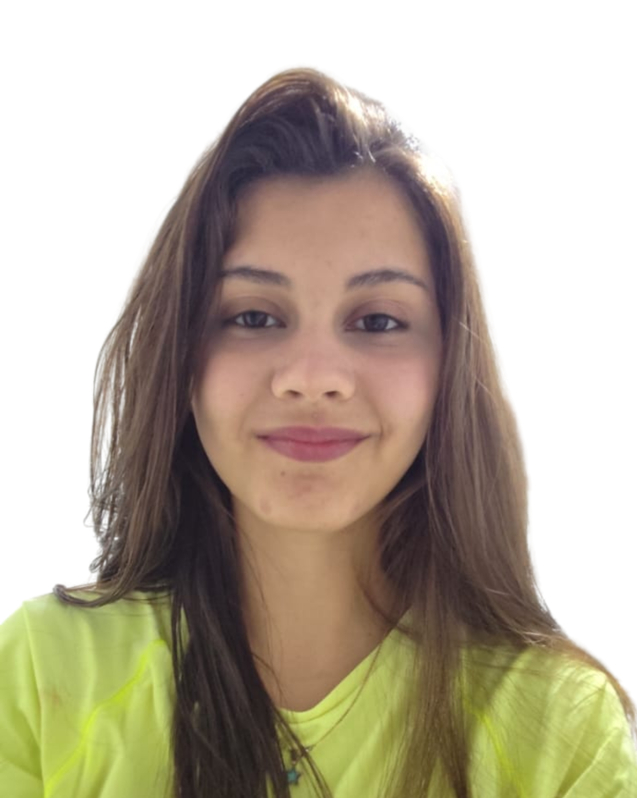

Portfólio profissional
ANA CRISTINA DOMINGUES
Conecto marketing, tecnologia e organização para desenvolver soluções que deixam a comunicação, os projetos e a rotina das empresas mais simples e eficientes.
Explore ↓
02
Manifesto
Ideia boa precisa virar prática
Nem só marketing. Nem só tecnologia. Gosto de trabalhar onde comunicação, processos e tecnologia se encontram. É nesse espaço que normalmente surgem os projetos mais interessantes.
Minha atuação integra comunicação, dados, tecnologia e organização para transformar ideias em soluções aplicáveis ao dia a dia das empresas.
Tenho um perfil mão na massa e gosto de entender como diferentes áreas podem trabalhar melhor juntas. Transito entre marketing, comercial, produção, logística, atendimento e tecnologia, buscando soluções que realmente funcionem no dia a dia.
03
Indicadores
Na prática
Um pouco do que já passou pela minha rotina profissional.
04
Sobre mim
Atuação integrada
Gosto de estar onde comunicação, operação e tecnologia se encontram.
Atuo na integração entre marketing, tecnologia e gestão de processos, unindo comunicação, organização e iniciativas digitais para melhorar a rotina das empresas.
Meu foco é entender o cenário, organizar informações, construir mensagens claras e desenvolver soluções digitais.
Marketing Estratégico
Tecnologia
Transformação Digital
Processos
05
Trajetória
Em evolução constante
Aprender continuamente, colocar em prática e evoluir a cada projeto.
Administração, desenvolvimento de sistemas e vivência industrial me ajudam a enxergar o negócio por vários ângulos, do conteúdo ao processo.
2020
Técnico em Administração
Base para entender rotina, organização, processos e como a operação acontece na prática.
2022
Início da atuação na OuroPlast
Vivência próxima do marketing, da operação e das melhorias que acontecem dentro da empresa.
2023
Desenvolvimento de Software Multiplataforma
Contato mais profundo com programação, lógica de sistemas, produto digital e construção de melhorias.
2022 até hoje
Marketing, eventos e transformação digital
Projetos com comunicação, feiras, CRM, análise de dados, relatórios, processos, automações e soluções digitais.
06
Projetos selecionados
Estudos de caso
Projetos que mostram como eu penso, organizo e executo.
Aqui estão alguns projetos em que comunicação, eventos, marca e processos aparecem juntos. Alguns abrem com fotos reais do trabalho; o projeto de redes sociais leva direto aos perfis.

01 / Estratégia de evento
BANATECH
Meu papel: Planejamento e organização
Atuação no planejamento do evento, produção de materiais, divulgação, relacionamento com participantes e organização das entregas.

02 / Posicionamento de marca
FEIBANANA
Meu papel: Comunicação e materiais
Desenvolvimento de conteúdos, materiais visuais e ações de divulgação para a presença da OuroPlast na feira.

03 / Relacionamento regional
ABANORTE FRUIT CONNECTIONS
Meu papel: Conteúdo e relacionamento
Criação de materiais, organização de fornecedores e comunicação voltada à aproximação com produtores do Norte de Minas.

04 / Redes sociais
REDES SOCIAIS
Meu papel: Conteúdo e rotina digital
Gestão de perfis com criação de conteúdo, organização de publicações e comunicação adaptada a públicos diferentes.
07
Transformação digital
Tecnologia com pé no chão
Digitalizar não é complicar. É deixar informação e processo mais fáceis de usar.
Atuei na digitalização de rotinas internas por meio da criação de dashboards, organização de informações, uso de CRM, automações, relatórios gerenciais e entregas voltadas às áreas comercial, logística, produção, estoque e atendimento.
CRM e atendimento
Uso e análise de RD Station CRM, RD Conversas, acompanhamento comercial, relatórios e experiência do cliente.
Processos e operação
Mapeamento de gargalos e organização de fluxos ligados a indicadores, estoque, pedidos, produção e logística.
Dados e dashboards
Planilhas estruturadas, relatórios executivos, indicadores e visualizações para apoiar decisões.
Soluções digitais
HTML, CSS, JavaScript, backend, Swagger, JWT, roles, automações e estrutura inicial de mini ERP.
08
Ferramentas
Meu kit de trabalho
Ferramentas que uso para criar, organizar, analisar e melhorar processos.
Marketing e comunicação
Produção de conteúdo, identidade visual e comunicação institucional para diferentes canais.
- Figma
- Canva
- WordPress
- SEO
- Redes sociais
- Criação de conteúdo
- Identidade visual
- Branding
- Comunicação institucional
CRM e análise comercial
Gestão comercial, acompanhamento de indicadores e análise de dados para apoiar decisões.
- RD Station CRM
- RD Conversas
- Excel
- Google Sheets
- Relatórios
- Dashboards
- Indicadores
- Análise de dados
Tecnologia
Desenvolvimento de aplicações web, integrações e automações voltadas para melhoria da rotina.
- HTML
- CSS
- JavaScript
- GitHub
- Swagger
- JWT
- Backend
- Automações
Operação e negócios
Organização de fluxos, documentação e melhoria contínua conectando diferentes áreas.
- Melhoria de processos
- Documentação
- Organização interna
- ERP
- Análise operacional
- Planejamento
- Integração entre áreas
09
Expertise
O que eu levo para a mesa
Um repertório híbrido para atuar entre conteúdo, dados, tecnologia e operação.
Marketing e comunicação
Desenvolvo conteúdos, materiais institucionais, campanhas e textos comerciais com foco em clareza, linguagem de marca e objetivo da comunicação.
Eventos e experiências
Atuei na organização de feiras, criação de materiais, cobertura, certificados e comunicação antes, durante e depois dos eventos.
CRM, comercial e atendimento
Acompanho informações comerciais, relatórios, indicadores e oportunidades de melhoria na experiência do cliente.
Tecnologia
Desenvolvimento de aplicações web, integração de APIs, autenticação, versionamento e soluções voltadas para rotinas internas.
Processos internos
Organizo informações e acompanho rotinas ligadas à operação, produção, estoque, pedidos, logística e indicadores.
Organização institucional
Desenvolvi roteiros, mensagens profissionais, relatórios, dashboards, procedimentos e documentos para padronizar informações.
10
Contato
Vamos conversar
Aberta a conversar, aprender e construir bons projetos em equipe.
Estou aberta a oportunidades para desenvolver projetos que integrem marketing, tecnologia e transformação digital, contribuindo para o crescimento de empresas por meio de soluções práticas e inovação.